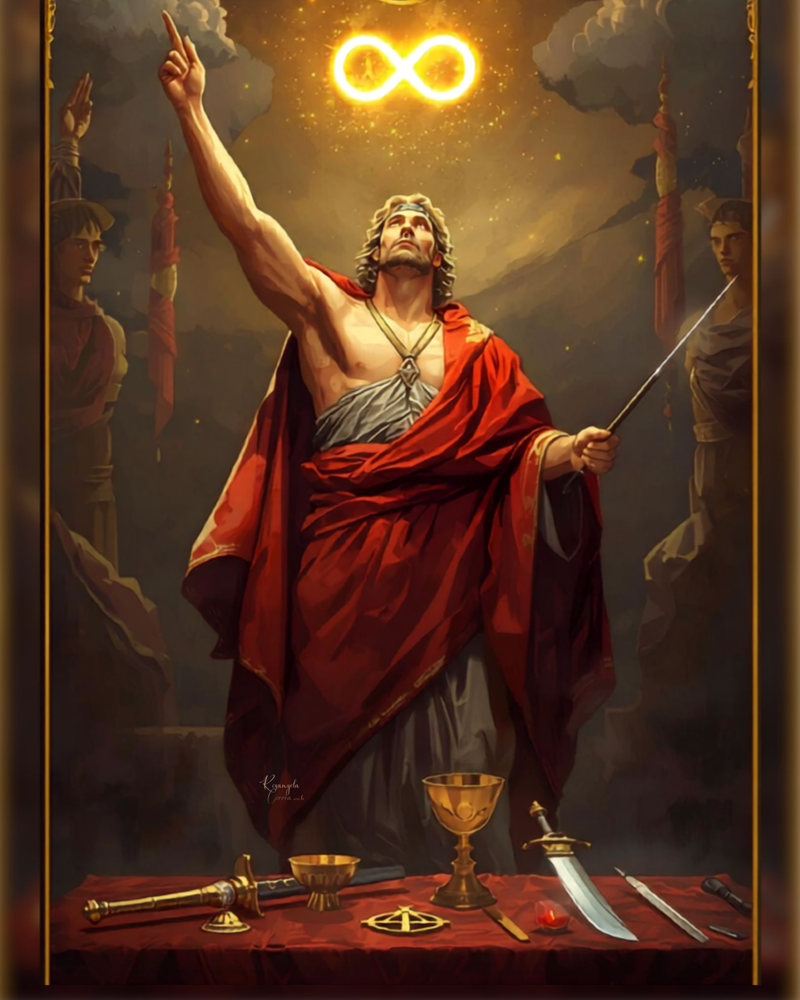
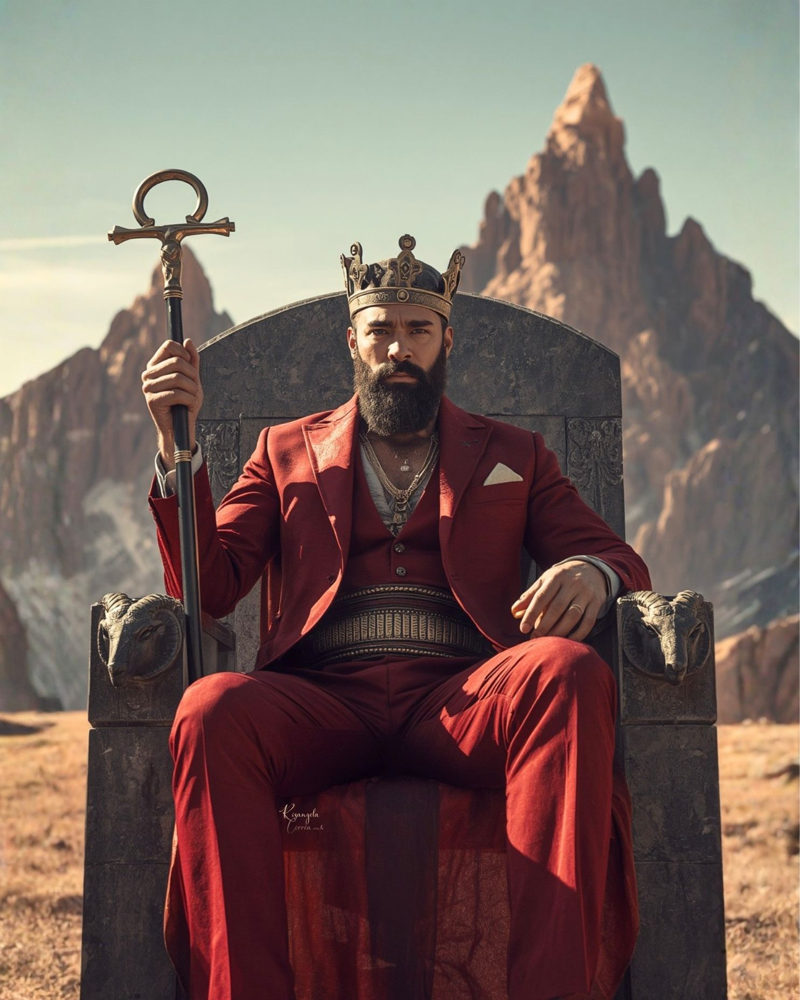
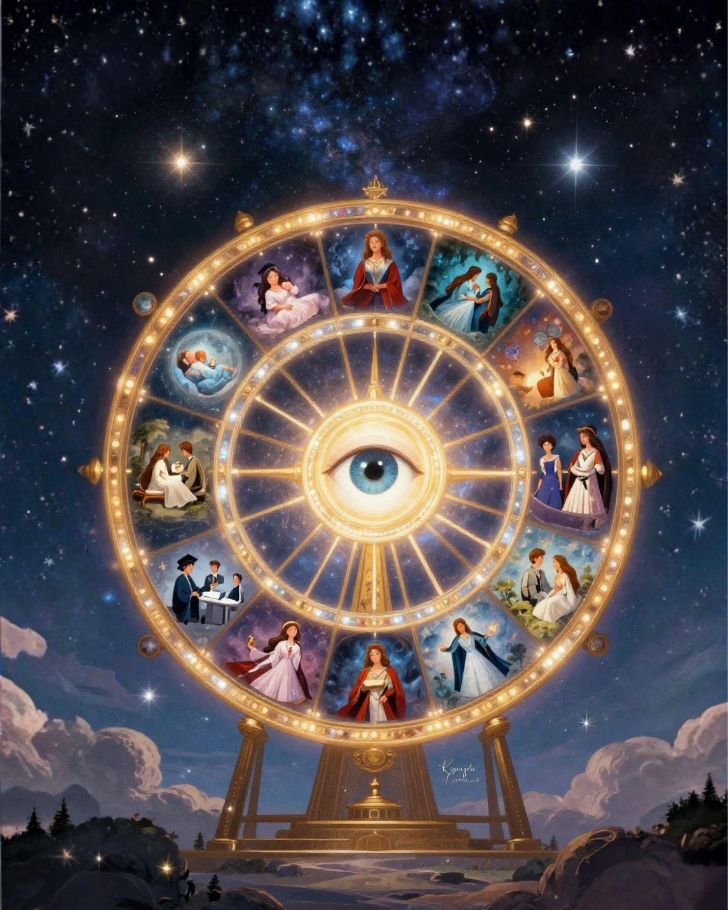
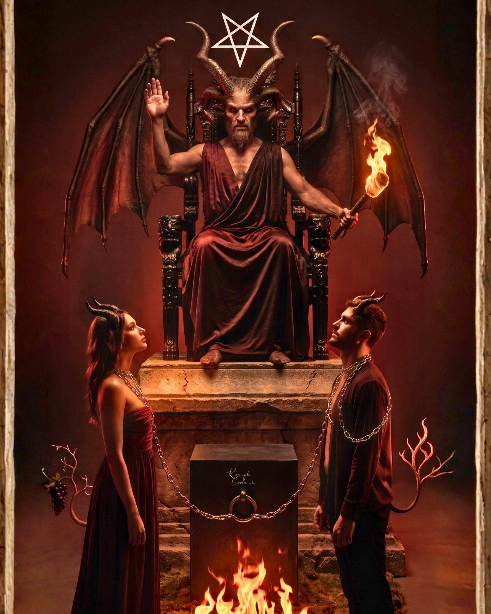
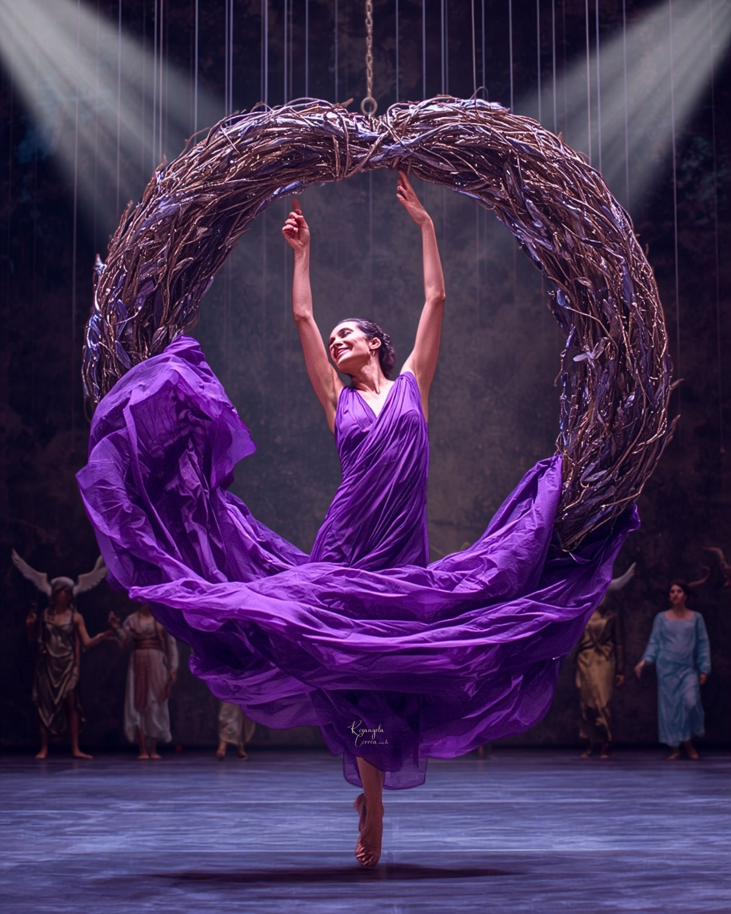

Acolhimento, Entendimento e Alinhamento
Escuta ativa junguiana da sua principal demanda e necessidades.
Fundamentado na clássica obra de Sallie Nichols, 'Jung e o Tarô — Uma Jornada Arquetípica' — fruto de seus estudos no Instituto C. G. Jung de Zurique —, o uso das lâminas em nosso set terapêutico afasta-se de qualquer prática de adivinhação futurista. O Tarô atua como um poderoso mapa projetivo e revelador da dinâmica do Inconsciente Coletivo e dos Arquétipos universais.
Através do conceito-chave como a Individuação (o resgate da sua totalidade) ou ainda de Sincronicidade e do resgate da Imaginação Ativa(diálogo direto com seus conteúdos internos), ou seja, as imagens arquetípicas que espelham a sua mente universal, bem como, os símbolos exatos que a sua psique necessita são trazidos à superfície. O carrossel abaixo apresenta de forma ilustrativa apenas os Arcanos Maiores com suas respectivas indicações arquetípicas e olhar analítico junguiano. No entanto, é fundamental destacar que todas as sessões de abordagem terapêutica contemplarão todas as 78 cartas do Tarô Rider Waite Smith e suas respectivas funções arquetípicas/simbólicas, conforme os temas e assuntos que aflorarem espontaneamente no seu processo individual. O Mapa Simbólico completo é composto por: os Arcanos Maiores (movimentos macro e profundos da alma); os Arcanos Menores divididos em sua numerados (etapas e estágios no tempo e na matéria, ou seja, o cotidiano); as Cartas da Corte (atitude e postura prática diante da vida); e os Naipes, que representam os quatro elementos da natureza (Terra, Ar, Água e Fogo) e as quatro áreas fundamentais da experiência humana.
"As cartas não surgem por mero sorteio; elas são extraídas através de uma escolha consciente do próprio cliente ou pela permissão concedida à analista que conduz o baralho em mãos. Sob a luz da Sincronicidade de Carl Gustav Jung, esse ato conecta o momento presente aos símbolos exatos de que a sua psique necessita para trazer o invisível à superfície."





O Tarô Terapêutico sob a perspectiva analítica não engessa a sua jornada em fórmulas prontas. Cada consulta é desenhada sob medida para as suas necessidades. Durante os primeiros 30 minutos de acolhimento e escuta ativa, nós mapeamos as suas demandas, cansaços, dúvidas ou conflitos. É a partir desse diagnóstico inicial que identificamos qual das abordagens abaixo atuará como o mapa simbólico mais preciso para trazer os conteúdos do seu inconsciente à superfície.
Uma leitura multidimensional que analisa a sua queixa em profundidade. Entendemos as motivações inconscientes, as influências do passado recente, o seu nível de consciência sobre o problema e as perspectivas de futuro se o padrão atual for mantido.
Posicionamento Clínico: Indicado para quando você traz uma questão ou um impasse específico (seja uma escolha afetiva, um dilema de carreira, uma crise familiar ou um esgotamento sem causa aparente). É uma análise profunda de causas, efeitos e forças ocultas.
O Núcleo Psíquico: O ponto de partida se dá no cruzamento imediato da sua realidade. A primeira lâmina traz o tema central e o cerne da sua questão atual, enquanto a segunda carta a atravessa fisicamente, revelando os fatores e forças que estão influenciando, tensionando ou bloqueando a sua ação direta no presente.
As Raízes Ocultas: Uma investigação sobre o tempo. Descemos até as bases inconscientes e os eventos antigos que geraram a situação atual, cruzando-os com o eco das energias do seu passado recente, identificando aquilo que já cumpriu seu papel e precisa ser conscientizado e deixado para trás para que a sua psique possa fluir em movimento.
O Direcionamento da Consciência: O mapeamento do topo das suas aspirações. Analisamos os seus objetivos lógicos e o que você pensa conscientemente sobre o problema, tencionando com a tendência imediata de acontecimentos e circunstâncias que estão prestes a se manifestar nas próximas semanas.
O Campo de Forças: O espelho das interações. Avaliamos o tencionamento profundo entre a sua atitude mental interna, as influências e percepções do ambiente externo (família, sociedade ou trabalho) e os medos ou esperanças secretos que moldam silenciosamente as suas escolhas.
A Síntese Transcendente: O desfecho da jornada. A leitura culmina na indicação do resultado provável e tendência futura caso a sua trajetória atual e seus padrões de comportamento repetitivos não sejam conscientizados, integrados e alterados.
Ideal para mapear a estrutura global do seu momento. Cruzamos a simbologia do Tarô com as 12 casas astrológicas para diagnosticar áreas como finanças, relacionamentos familiares, carreira, saúde mental e propósito.
Posicionamento Clínico: Perfeito para quem busca um panorama global e integrativo de seu momento presente. Excelente para grandes revisões de vida, crises existenciais ou momentos em que tudo parece interligado.
Identidade, Recursos e Intelecto: Iniciamos o desenho do mapa astral escaneando o seu "Eu" profundo, a sua autoimagem e a sua energia física atual. Em seguida, investigamos a sua relação com as finanças, seus valores pessoais e segurança material, conectando à sua capacidade de comunicação, intelecto e trocas imediatas com o entorno.
Bases, Expressão e Rotina: Adentramos a sua intimidade doméstica, suas raízes e a dinâmica familiar, expandindo para os seus canais de criatividade, romances e o prazer essencial de realizar. Concluímos esse quadrante mapeando o seu trabalho cotidiano, os deveres diários e a sua saúde física frente aos sinais de esgotamento.
O Outro, as Crises e a Expansão: Analisamos o espelho das parcerias de longo prazo, casamentos ou sociedades comerciais. A partir daí, investigamos as suas transformações profundas, crises, desapegos necessários e finanças compartilhadas, abrindo caminho para a sua busca por espiritualidade, filosofia de vida e estudos superiores.
Destino, Coletivo e o Ponto Cego: Mapeamos o ápice da sua projeção no mundo: a carreira, o status social e o seu destino profissional, desaguando nos seus projetos para o futuro, amizades e engajamento social. O círculo se fecha no mergulho ao inconsciente, revelando os medos reprimidos e os pontos cegos psíquicos que sabotam suas decisões sem que você perceba.
Uma visão holística e profunda para preparar você mental e emocionalmente para os seus próximos doze meses. Um mapa prático que substitui adivinhações por direcionamento, ajudando a planejar e moldar o seu futuro.
Posicionamento Clínico: Uma abordagem de acolhimento cíclico temporal. Diferente de uma análise engessada, ela foca em preparar o seu estado mental para mapear as tendências, desafios e pontos de virada do ano de forma orgânica.
A Atmosfera Regente: No topo da estrutura, a primeira lâmina dita a tônica espiritual, mental e emocional que atravessará o seu período. É o clima geral e a carta regente que guiará o seu ano como um todo.
O Eixo de Desenvolvimento: Na linha central do jogo, decodificamos a tríade do seu crescimento. Identificamos o principal aprendizado que a vida está pedindo para você desenvolver, tencionando diretamente com o maior desafio ou teste de amadurecimento que baterá à sua porta, e revelando o seu maior potencial e oportunidade latente de expansão.
A Ancoragem Prática: Na linha de base, estruturamos a sua postura no mundo. O Tarô entrega o conselho central para orientar suas decisões, aponta com precisão quais padrões, situações ou relações já não servem mais e devem ser deixados para trás, e revela onde você deve focar e investir conscientemente a sua energia.
O seu mapa de navegação para o novo ciclo solar. Mapeamos os recursos internos que estão à sua disposição, os desafios centrais do seu ano e o principal aprendizado que a sua alma busca amadurecer.
Posicionamento Clínico: Exclusivo para o período de celebração e fechamento de ciclo (aniversário / revolução solar). Atua como uma ferramenta analítica de introspecção especial anual para guiar o seu amadurecimento pelos próximos 12 meses.
O Encerramento e o Fluxo: Uma análise de transição de ciclos. Investigamos as influências do seu passado recente, ajudando você a liberar e deixar ir as experiências que já não servem mais, enquanto reconhecemos as conquistas e vitórias do último ano que continuarão a fluir com você no novo ciclo.
O Momento e as Questões Inacabadas: Diagnosticamos o seu momento presente, observando como você se encontra hoje emocional e mentalmente, e identificamos com clareza quais pendências ou questões do último ano ainda precisam ser resolvidas ou formalmente concluídas para não travarem seus passos.
As Novas Forças e os Desafios: Descobrimos as novas energias e correntes arquetípicas que entrarão na sua vida, preparando a sua psique para os desafios e testes de amadurecimento que podem surgir, apontando os caminhos e recursos internos para superá-los.
As Metas e a Síntese do Ciclo: Definimos as suas metas tangíveis e alcançáveis para os próximos doze meses, compreendendo a tônica predominante e o tema geral do ano. O jogo se conclui com um presente simbólico — uma bênção ou surpresa que a vida reserva para o seu crescimento pessoal ao longo deste novo ano pessoal.
Uma imersão rápida na estrutura do seu Self cruzada com a sua realidade cotidiana material. Excelente para quem busca identificar bloqueios imediatos de autoconfiança ou alinhar o ego à alma.
Posicionamento Clínico: O tencionamento psíquico mais profundo e puramente terapêutico do portfólio. Utiliza a sobreposição de cartas para traduzir os movimentos macro do inconsciente nas ações do dia a dia.
"Um método avançado composto por 4 posições estruturais em dupla camada. Os Arcanos Maiores revelam a raiz psicológica arquetípica profunda e os Arcanos Menores materializam como essa energia se desdobra nas suas ações cotidianas."
A Identidade Manifesta (A Luz): Investigamos a sua face consciente e aparente para o mundo. Esta estação revela como você se vê e como os outros o percebem, trazendo à tona o que é conhecido, evidente, seus talentos ativos e suas virtudes manifestas.
O Território Invisível (A Sombra): O mergulho profundo no inconsciente. Desvelamos as energias e influências que agem sobre as suas decisões, mas que estão ocultas tanto para você quanto para os outros, trazendo clareza sobre sabotagens ocultas ou potenciais reprimidos que precisam emergir.
A Privacidade da Psique (A Consciência Pessoal): Mapeamos os aspectos e características que você conhece e reconhece perfeitamente sobre si mesma(o), mas que escolhe estrategicamente manter reservados, privados ou resguardados do olhar do mundo exterior.
O Reflexo no Outro (A Percepção Externa): Descobrimos as revelações mais profundas sobre as suas dinâmicas relacionais: como os outros e o mundo exterior o percebem de fato, independentemente da sua própria consciência ou intenção atual, permitindo que você melhore seus vínculos e se relacione de maneira mais autêntica.
Geralmente aplicado como complemento de outros jogos dependendo do tempo.
Posicionamento Clínico: Diagnóstico dinâmico e de alta precisão. Usado pontualmente ou como um complemento cirúrgico aos jogos de Autoconhecimento ou Aniversário para refinar o tempo e as prioridades da sessão.
"Uma abordagem focada na estrutura do aqui e agora, decodificando de forma direta o macroprocesso da alma, a realidade material e a postura de ação no mundo."
O Movimento da Alma: O ponto de partida decodifica o aspecto profundo, interno e arquetípico que está movendo a sua psique neste exato momento da sua existência (Carta 1: Arcano Maior).
A Etapa na Matéria: O segundo vetor traduz o estágio prático do caminho, detalhando como essa energia se desdobra nas suas tarefas diárias, na sua rotina e nas ações do seu cotidiano material (Carta 2: Arcano Menor Numerado).
A Atitude Diante da Vida: A síntese final entrega a postura comportamental e ética recomendada, apontando a atitude prática que você deve adotar no mundo para atravessar o momento com maestria e autorregulação (Carta 3: Arcano da Corte).
Escuta ativa junguiana da sua principal demanda e necessidades.
Investigação profunda de pontos cegos através de um layout estruturado de Tarô Terapêutico.
Com base no que conversarmos ao longo do atendimento, poderemos sugerir indicações para você recuperar a clareza e destravar a sua rotina, como: ajustes de rotina e/ou comportamento, exercícios de atenção e/ou reflexão, bem como atitudes práticas de inícios, encerramentos e/ou adaptabilidades.

Analista Junguiana
Psicologia Analítica
Com mais de 21 anos de prática clínica fundamentada na abordagem Junguiana e Psicossomática, dedico meu trabalho a guiar indivíduos que buscam clareza, autonomia e o resgate de sua própria força de autorregulação. Minha trajetória, no entanto, consolidou-se através de um percurso singular: atuei por 13 anos no universo da Tecnologia da Informação como analista de sistemas e gerente de projetos em grandes multinacionais. Essa transição diagonal de carreira me proporcionou uma bagagem experiencial única.
Compreendo perfeitamente as pressões, o pragmatismo e as dinâmicas do meio corporativo, bem como a coragem exigida para recalcular rotas de vida. É por isso que, em meu set terapêutico, não existem "pacientes" passivos, mas sim Clientes Ativos — indivíduos convidados a tomar posse de sua história e atuar conscientemente em seu processo de desenvolvimento.
Por que o Tarô Terapêutico?
O Tarô Terapêutico que utilizo em minhas consultas de 1h30 não se reduz a uma adivinhação determinista ou fatalista. Embora as lâminas possam revelar tendências e abram um rico campo de possibilidades sobre os desdobramentos futuros do seu momento presente, a ferramenta atua, acima de tudo, como um poderoso aliado da Psicologia Analítica. Assim como os sonhos e a imaginação ativa, as lâminas do Tarô RWS manifestam os arquétipos e conteúdos do seu inconsciente que mais precisam de luz e integração no aqui e agora.
Unindo a clareza metodológica (lapidada em anos de engenharia de sistemas) à profundidade e sensibilidade dos meus estudos com grandes referências da psicologia junguiana no Brasil — como Carlos Byington, Maria Cristina Guarnieri, José Jorge de Morais Zacharias e Waldemar Magaldi Filho —, utilizo o Tarô como um mapa simbólico de alta precisão. Ele serve para organizar o caos mental, silenciar o excesso de racionalização e acessar as respostas que a sua própria psique já carrega.
Seja para investigar uma queixa específica ou para navegar por momentos de névoa, escolhas e transições, você encontrará aqui um espaço de acolhimento ético, tecnicamente embasado e comprometido com o seu resgate de clareza.
Descrição do Arquétipo aparecerá aqui.
Seja para tirar dúvidas, agendar sua Consulta de Alinhamento Arquetípico ou iniciar o seu processo de psicoterapia, estou à sua inteira disposição. Envie uma mensagem no formulário ao lado e darei o retorno o mais breve possível.
Agendamentos e dúvidas rápidas:
(11) 99883-4347
Para dúvidas administrativas:
info@psicoterapiajunguiana.com
Consultório Virtual & Atendimento (On-line).